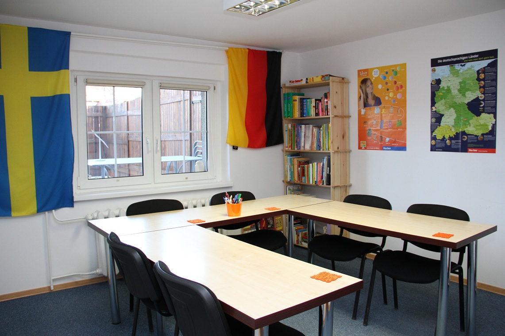
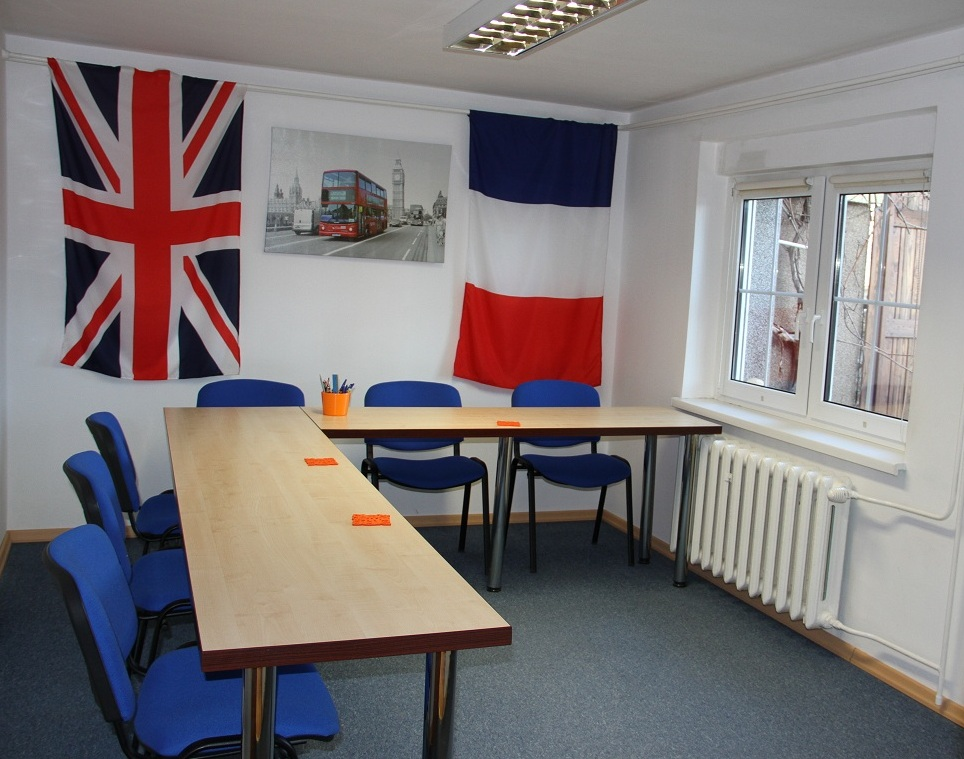

Umlaut
Szkoła języka niemieckiego i angielskiego
UMLAUT istnieje w Koszalinie od 2008 roku i specjalizuje się w nauczaniu języka niemieckiego w nowoczesny sposób, z nastawieniem na rozmowę i ogólną komunikację. W ofercie Umlaut jest także język angielski dla dzieci, młodziezy szkolnej oraz angielski "od zera" dla dorosłych.
język niemiecki
Lekcje języka niemieckiego odbywają się stacjonarnie w Umlaut lub online.
język angielski
Lekcje języka angielskiego odbywają się w trybie stacjonarnym.
tłumaczenia
Umlaut nie jest biurem tłumaczeń, ale jako szkoła języków obcych posiada kontakty z tłumaczami przysięgłymi z Polski oraz Europy, dlatego może swoim stałym klientom zaoferować także pomoc związaną z tłumaczeniem pisemnym różnego rodzaju dokumentów.